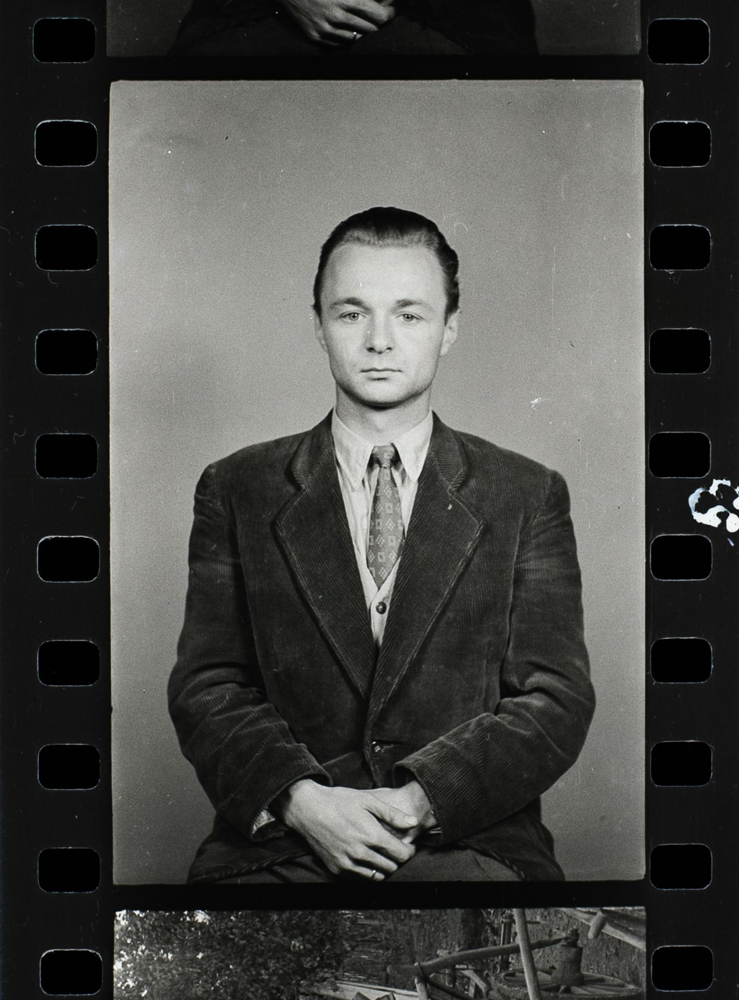
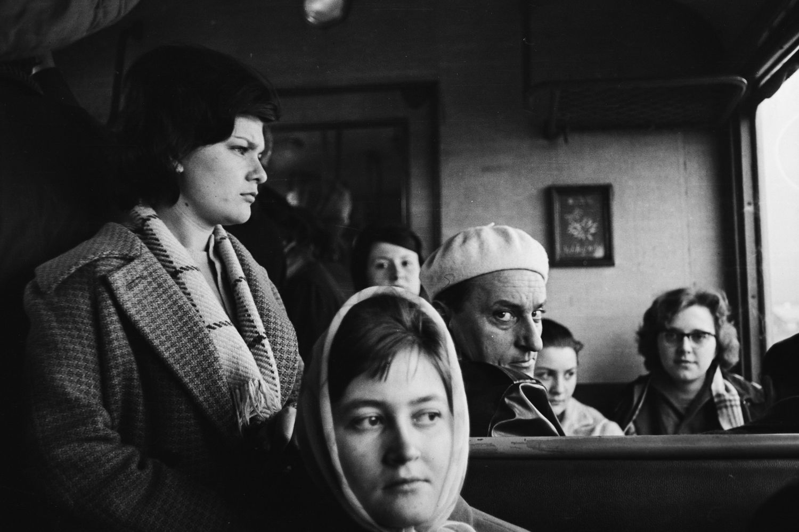

A gyűjtemény mintegy száz tekercset foglal magába és velük együtt előkerültek a jegyzetei is, amelyek aprólékosan rögzítik a képek minden fontos részletét: hol, mikor, milyen géppel készültek, sőt, néhol még rekeszértékek és záridők is szerepelnek bennük. A felvételek az 1950-es évektől az 1980-as évek végéig ívelnek, és már a címek is mesélnek: „Emi, Karcsi és a demizson a motoron”, vagy „Emike és náthás édesanyja a Stefánián”.
A tekercsek között családi pillanatok, utazások, szociofotók, portrék és tájképek egyaránt vannak. Fiatal voltam, amikor meghalt, így kevés emlékem maradt róla, de most, a képein és jegyzetein keresztül, mintha újra találkoznánk.
Ezek a negatívok nemcsak múltbeli lenyomatok, hanem hídak is: az ő látásmódján keresztül érthetem meg jobban, honnan jövök. Egy-egy tekercs kicsit olyan, mint egy napló – csak fényből és ezüstből írva.

Ahogy időm és kedvem engedi, szeretnék elmélyedni ebben az anyagban. Megérinteni, rendszerezni, talán digitalizálni is, hogy újra láthatóvá váljanak azok a pillanatok, amelyek évtizedekig sötétben pihentek. A tudat, hogy a saját kezével befűzött és előhívott negatívokhoz nyúlhatok, már önmagában különleges.
„Csak az hal meg, akit elfelejtenek.”
— Maurice Maeterlinck
Féltve őrzött kincseink 50 év után újra életre kelnek

Jól indul az év. Édesapám nekem adta apai nagyapám, id. Vas Károly féltve őrzött negatívjait. Számomra ez hatalmas ajándék, főleg így, hogy a fényképezés lett a hivatásom. Nehéz szavakba önteni, mit jelent ez.